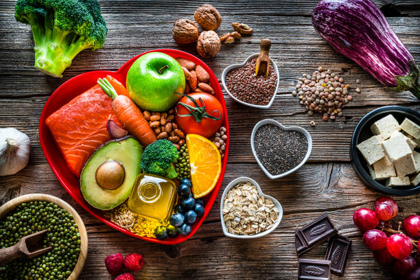
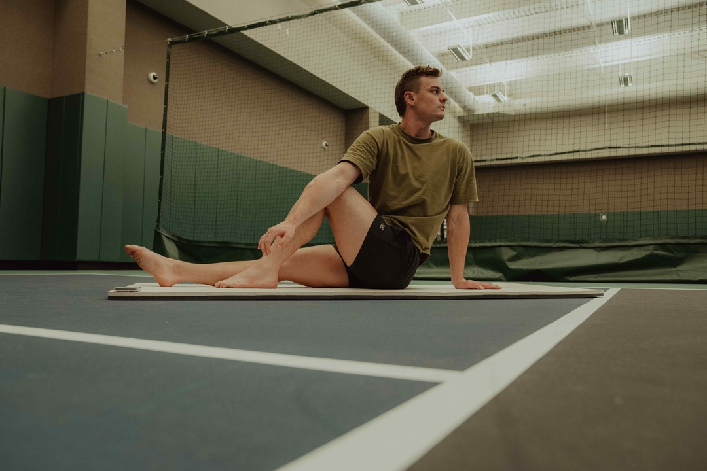

Nutrition
- Eat a balanced diet that includes carbohydrates, proteins, and healthy fats.
- Stay hydrated by drinking plenty of water throughout the day.
- Consider timing your meals around your training sessions for optimal performance.
- Incorporate nutrient-dense foods such as fruits, vegetables, lean meats, and whole grains.
Recovery
- Get enough sleep each night to allow your body to recover and repair.
- Incorporate rest days into your training schedule to prevent overtraining.
- Use techniques such as stretching, foam rolling, and massage to aid in muscle recovery.
- Consider active recovery activities like light swimming or walking on rest days.

